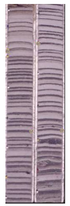
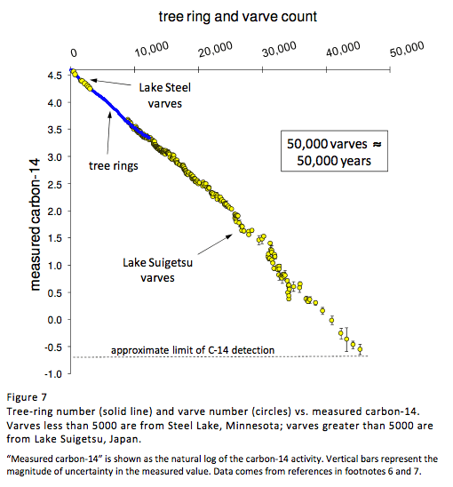

Lake Varves as Natural Calendars
|  | Varves are annual sediment layers formed in lakes in certain environments. According to Davidson and Wolgemuth "In northern latitudes where lakes freeze over, fine grained particles will settle out in winter, followed by coarser-grained material in spring as ice thaws and increased stream flow carries larger particles into the lake."
In other places, varves are produced by annual diatom blooms. "At all times of the year, fine particulate material settles out on the bottom, but during the spring, single-celled organisms with a solid shell rapidly reproduce near the surface of the lake. As they die, the shells rain out onto the lake floor and form a light-colored coating. Each winter-spring cycle produces a dark-light colored sediment couplet, or varve."
The photo at left shows two core sections of sediment varves. The photo is from Tufts University Glacial Varve Project.
The graph below is a summary of comparison of carbon-14 activity with tree rings and with lake varves from Lake Steel in Minnesota and Lake Suigetsu in Japan. It was prepared by geologists Davidson and Wolgemuth. From Lake Suigetsu, a sediment core nearly 250 feet in length was collected in 1991. The core contained an uninterrupted sequence of varves with a total count in excess of 100,000!
|

The varve data from Lake Suigetsu are from H. Kitagawa and J. van der Plicht, Atmospheric radiocarbon calibration beyond 11,900 CAL BP from Lake Suigetsu laminated sediments. Radiocarbon, 2000, 42:370-381. The Lake Steel varve data are from P.J. Reimer and 28 others, IntCal04 terrestrial radiocarbon age calibration, 0-26 cal kyr BP. Radiocarbon, 2004, 46:1029-1058.; J. Tian, T.A. Brown, and F.S. Hu, Comparison of varve and 14C chronologies from Steel Lake, Minnesota, USA. The Holocene, 2005, 15:510-517.
|
Index
References
Davidson & Wolgemuth |